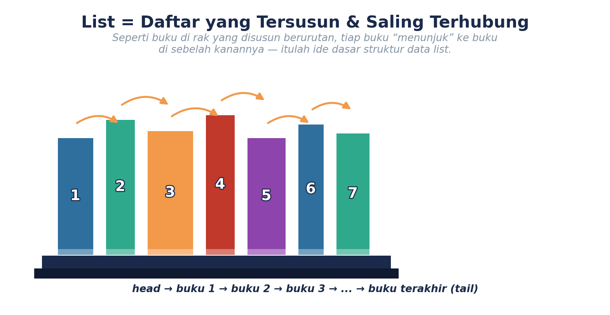
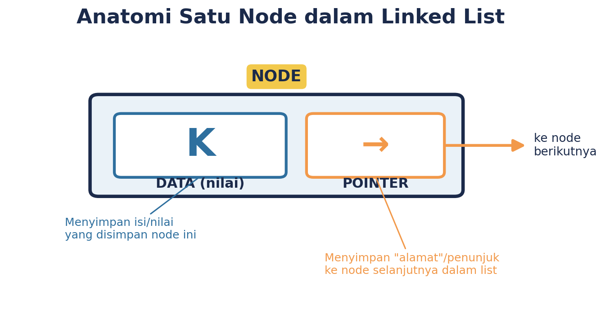
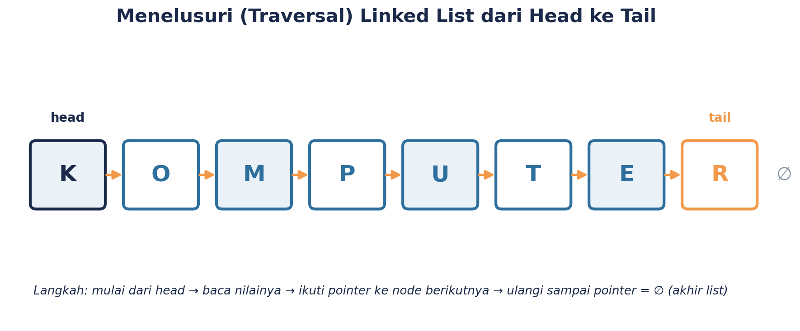
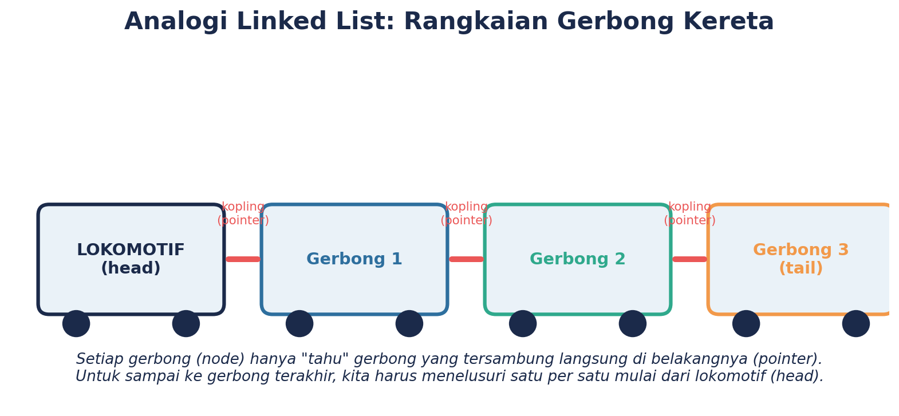
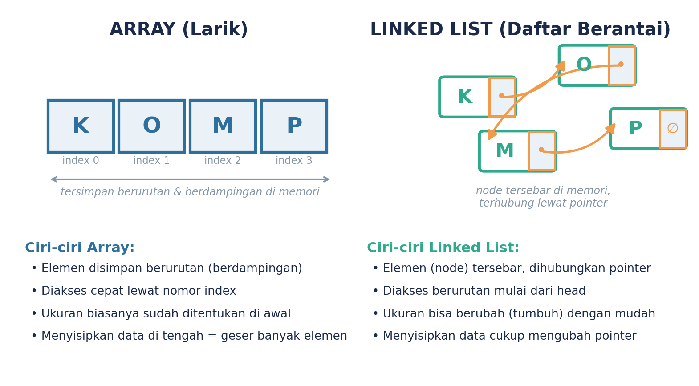
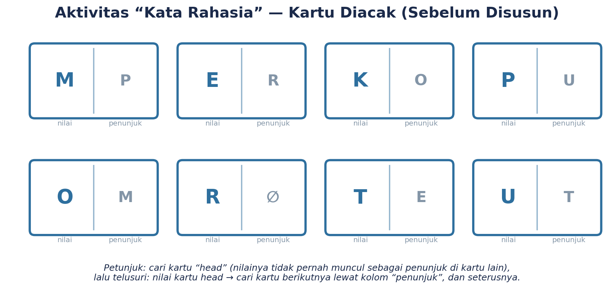
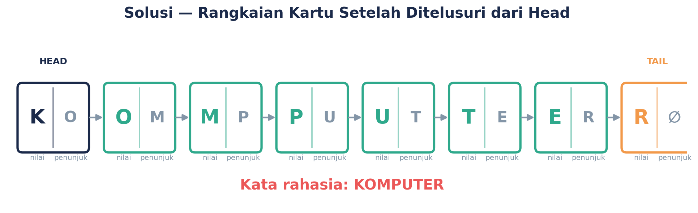
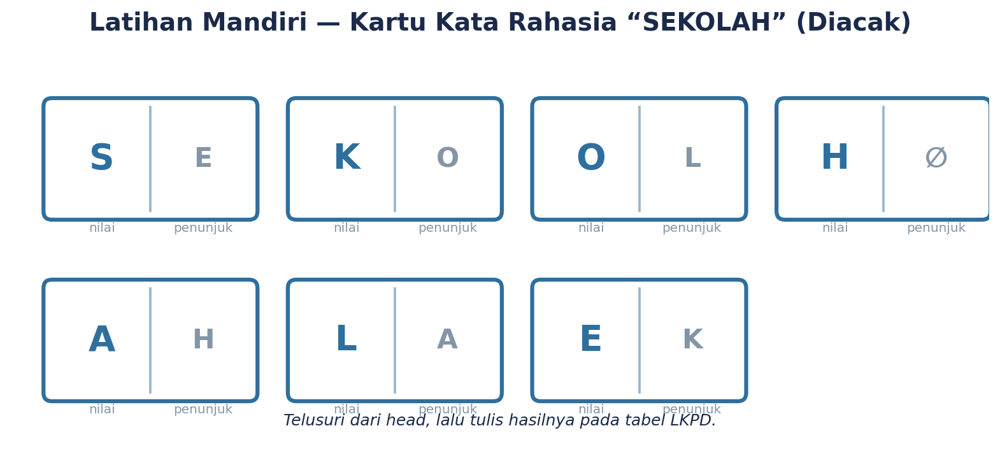

Sebelum Mulai, Ngobrol Dulu Yuk
Coba pikirkan sebentar: gimana caranya HP kamu nyimpen daftar kontak, atau gimana caranya aplikasi musik nyusun playlist favoritmu supaya lagu-lagunya muter berurutan? Nah, semua itu ada “dalang”-nya di balik layar: sebuah cara menyusun data yang disebut struktur data. Di TP3 ini, kita akan kenalan sama salah satu struktur data paling seru: LIST alias daftar berantai (linked list).
Tujuan belajar kita hari ini:
- Paham apa itu struktur data list dan kenapa itu penting.
- Kenal komponen-komponen list: node, data, pointer, head, tail.
- Bisa menelusuri (traversal) sebuah list buat nemuin informasi tertentu.
- Bisa kasih alasan yang masuk akal atas cara kamu menyelesaikan soal list.
1. Struktur Data, Sebenarnya Apa Sih?
Struktur data itu sebenarnya nggak seseram namanya, kok. Struktur data cuma cara kita menyimpan, mengambil, dan menyusun data supaya gampang dipakai. Ibaratnya, lemari pakaianmu juga punya “struktur”: baju digantung di satu sisi, kaos dilipat di rak lain, kaos kaki di laci khusus. Karena tersusun rapi, kamu bisa cepat nemuin barang yang kamu cari.
Komputer juga begitu. Data — angka, huruf, gambar, apa pun — perlu disusun dengan cara tertentu supaya komputer bisa mengakses dan mengolahnya dengan cepat dan tepat. Salah satu cara menyusun data itu namanya LIST.
2. Kenalan Sama List (Linked List)
List adalah kumpulan elemen yang disusun berurutan, di mana setiap elemen “tahu” elemen berikutnya. Dalam ilmu komputer, tiap elemen ini disebut NODE. Yuk lihat “anatomi” satu node berikut ini:

Coba perhatikan, satu node itu punya dua bagian:
- DATA (nilai) — isi sebenarnya yang mau disimpan, misalnya sebuah huruf, angka, atau nama.
- POINTER (penunjuk) — semacam “panah” yang menunjukkan node mana yang berikutnya dalam daftar.
Nah, karena tiap node cuma nyimpan “alamat” node berikutnya (bukan seluruh isi), node-node ini nggak harus disimpan berdampingan. Mereka bisa tersebar, tapi tetap “nyambung” lewat pointer-nya masing-masing — mirip rantai!
3. Istilah-Istilah Penting
- HEAD — node pertama dalam list. Ini “pintu masuk” kita untuk mulai menelusuri seluruh list.
- TAIL — node terakhir dalam list. Pointer-nya biasanya kosong (∅) karena tidak ada node lagi setelahnya.
- TRAVERSAL — proses “menelusuri” list, dimulai dari head, mengikuti pointer satu per satu, sampai ke tail.

Menelusuri list itu seperti mengikuti jejak — satu langkah demi satu langkah, dari head sampai tail.
4. Biar Makin Kebayang: Analogi Gerbong Kereta
Kalau masih agak bingung, coba bayangkan rangkaian gerbong kereta api. Lokomotif ada di depan (ini “head”-nya). Tiap gerbong tersambung ke gerbong berikutnya lewat kopling (nah, ini ibarat “pointer”-nya!). Gerbong paling belakang nggak tersambung ke gerbong lain lagi — itu “tail”-nya.

Kalau kamu penumpang dan mau tahu ada berapa gerbong dalam rangkaian itu, kamu harus jalan dari lokomotif, lewat gerbong 1, gerbong 2, dan seterusnya — satu per satu, nggak bisa loncat-loncat. Itulah kenapa menelusuri list harus dimulai dari head!
5. List vs Array, Apa Bedanya?
Ada juga struktur data bernama ARRAY (larik). Bedanya apa dong sama list? Yuk bandingkan:

Singkatnya: array itu seperti kursi bioskop bernomor yang berjejer rapi — gampang dicari lewat nomor kursinya. List itu seperti rantai orang yang saling gandengan tangan — untuk sampai ke orang ke-5, kamu harus lewatin orang ke-1 sampai ke-4 dulu.
6. Ayo Praktik! Aktivitas “Kata Rahasia” Kerja Kelompok
Sekarang saatnya kamu buktikan sendiri pemahamanmu lewat permainan seru bareng kelompok. Nama aktivitasnya “Kata Rahasia” — kamu akan diberi satu set kartu yang sudah diacak oleh gurumu. Setiap kartu punya dua bagian: NILAI (huruf) dan PENUNJUK (huruf kartu berikutnya).

Langkah-langkahnya:
- 1 Amati semua kartu di kelompokmu. Jangan disusun dulu — cermati saja.
- 2 Cari kartu HEAD, yaitu kartu yang huruf nilainya TIDAK PERNAH muncul sebagai penunjuk di kartu lain.
- 3 Setelah ketemu head, cari kartu berikutnya: carilah kartu yang huruf NILAI-nya sama dengan huruf PENUNJUK di kartu head.
- 4 Ulangi terus langkah itu sampai kamu menemukan kartu dengan penunjuk ∅ (kosong) — itu tandanya kamu sudah sampai di tail!
- 5 Gabungkan semua huruf NILAI sesuai urutan yang kamu temukan. Itulah kata rahasianya!
Tips dari kakak kelas:
- Coba tandai kartu head dengan jarimu dulu sebelum mulai menelusuri, biar nggak lupa titik awalnya.
- Kalau nyangkut di tengah jalan, coba cek lagi — mungkin ada kartu yang penunjuknya salah kamu baca.
- Kerjasama itu kunci! Bagi tugas: ada yang pegang kartu, ada yang mencatat huruf yang sudah ditemukan.
Sudah selesai menyusun? Klik di sini untuk cek jawabannya

7. Latihan Interaktif — Giliran Kamu Sendiri! Mandiri
Sekarang coba sendiri. Berikut satu set kartu kata rahasia baru yang sudah diacak. Telusuri dari head sampai tail, lalu ketik jawabanmu di kotak bawah ini.

8. Kuis Dadakan — Cek Pemahamanmu! Kuis
Pilih salah satu jawaban pada tiap soal untuk melihat apakah jawabanmu tepat.
1. Node pertama dalam sebuah linked list disebut...
2. Ciri utama node terakhir (tail) dalam sebuah list adalah...
3. Untuk mengetahui elemen ke-4 dalam sebuah linked list, kita harus...
Rangkuman
| Istilah | Penjelasan Singkat |
|---|---|
| Struktur data | Cara menyimpan, mengambil, dan menyusun data. |
| List (linked list) | Kumpulan node yang saling terhubung lewat pointer. |
| Node | Satu elemen dalam list, terdiri dari data (nilai) dan pointer (penunjuk). |
| Head | Node pertama dalam list. |
| Tail | Node terakhir dalam list (pointer-nya kosong/∅). |
| Traversal | Proses menelusuri list dari head sampai tail, satu per satu. |
Yuk, Refleksi Sebentar
- Menurutmu, bagian mana dari materi hari ini yang paling gampang dipahami?
- Bagian mana yang masih bikin kamu bingung? Coba tanyakan ke gurumu!
- Kalau kamu harus menjelaskan apa itu “list” ke adik kelas dalam satu kalimat, kira-kira apa yang akan kamu katakan?